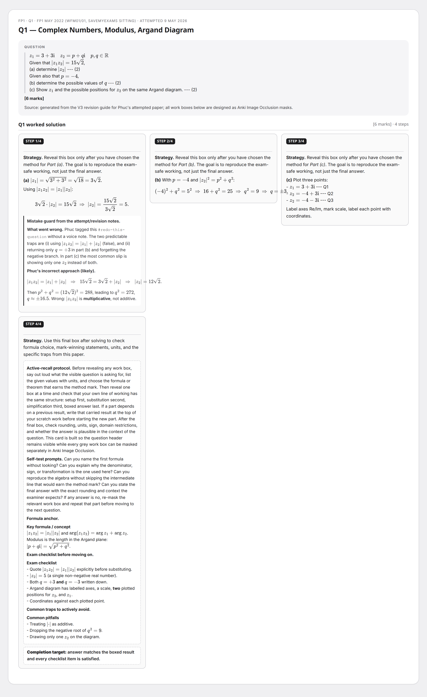
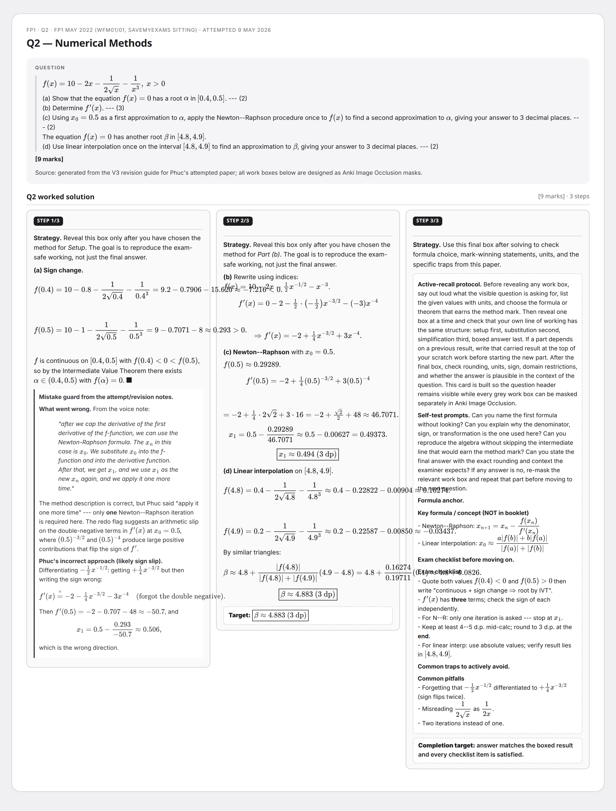
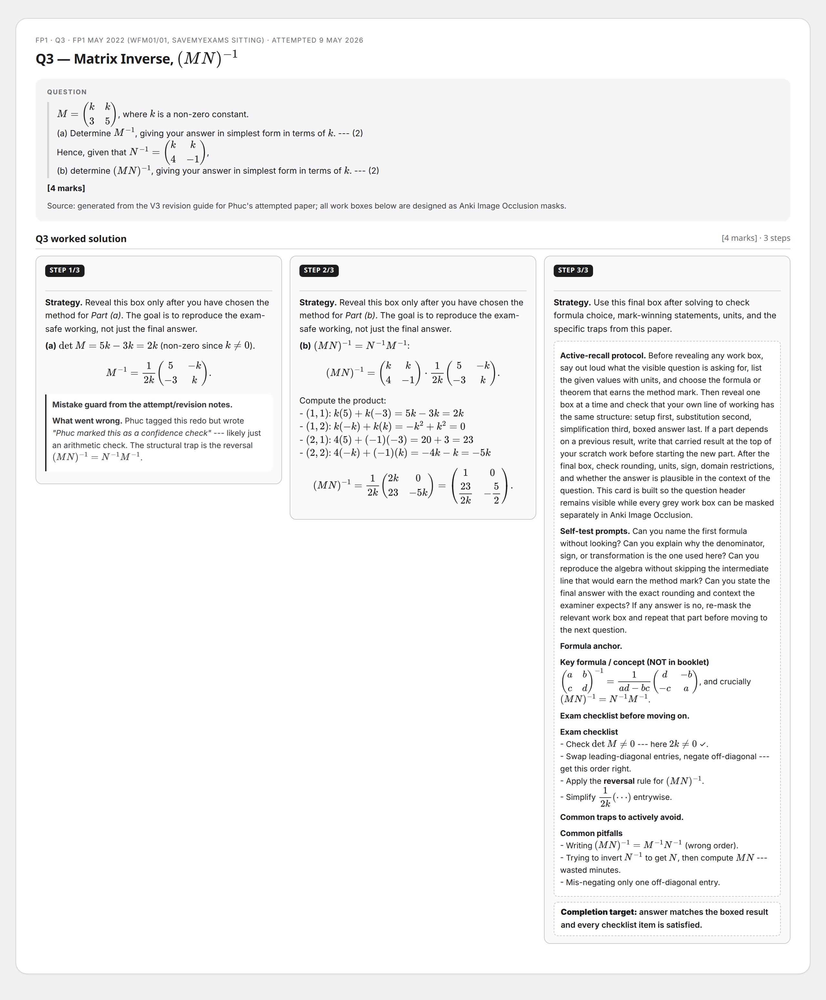
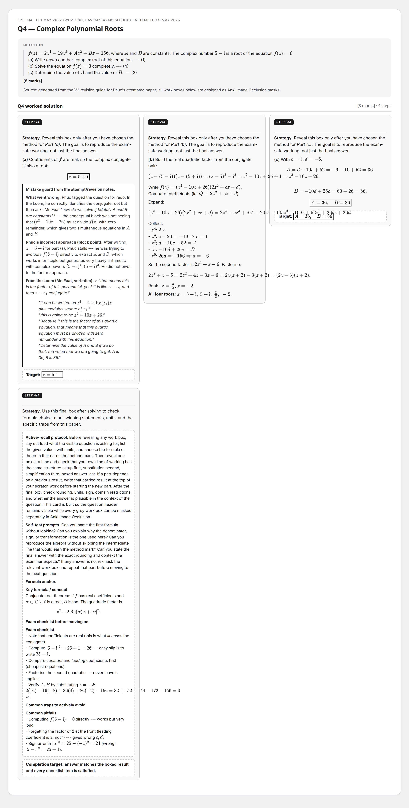
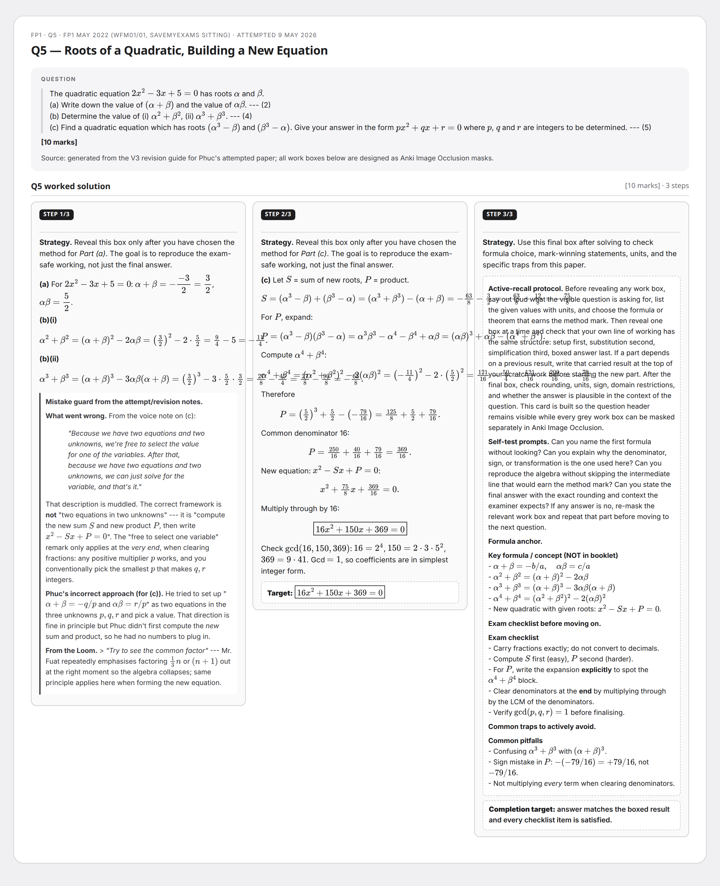
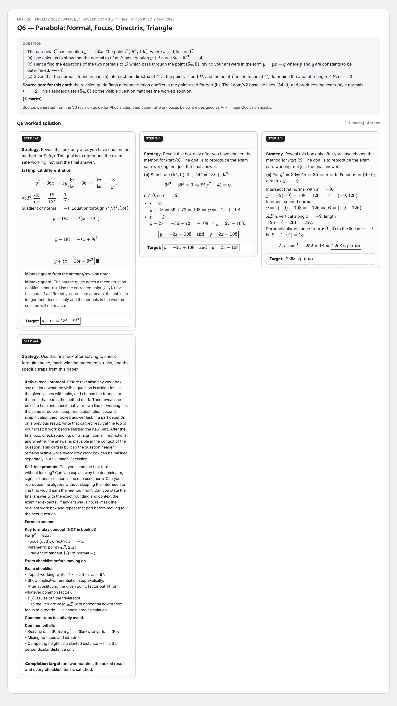
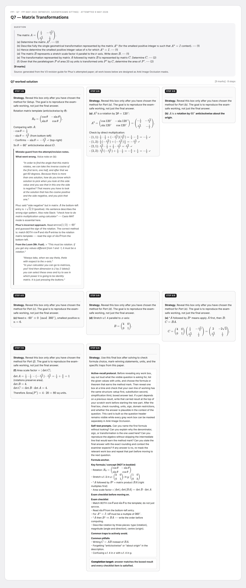
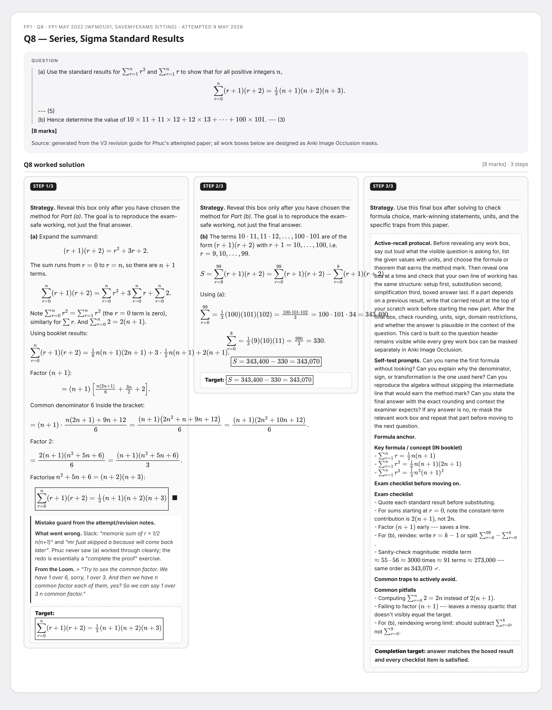
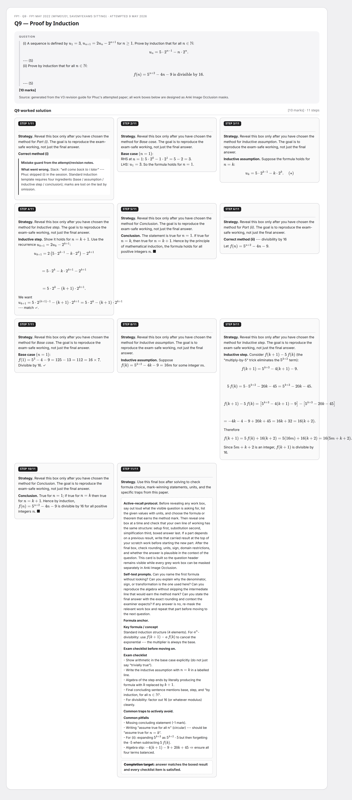

FP1 May 2022 (WFM01/01, SaveMyExams sitting)
Dense per-question multi-step flashcards. Open HTML for review, or PNG for Anki Image Occlusion. Built from the V3 revision guide and mirrored to dashboard + GitHub Pages.
9 cards75 marksFP1
Q1 — Complex Numbers, Modulus, Argand Diagram

Q2 — Numerical Methods

Q3 — Matrix Inverse, $(MN)^{-1}$

Q4 — Complex Polynomial Roots

Q5 — Roots of a Quadratic, Building a New Equation

Q6 — Parabola: Normal, Focus, Directrix, Triangle

Q7 — Matrix Transformations

Q8 — Series, Sigma Standard Results

Q9 — Proof by Induction
